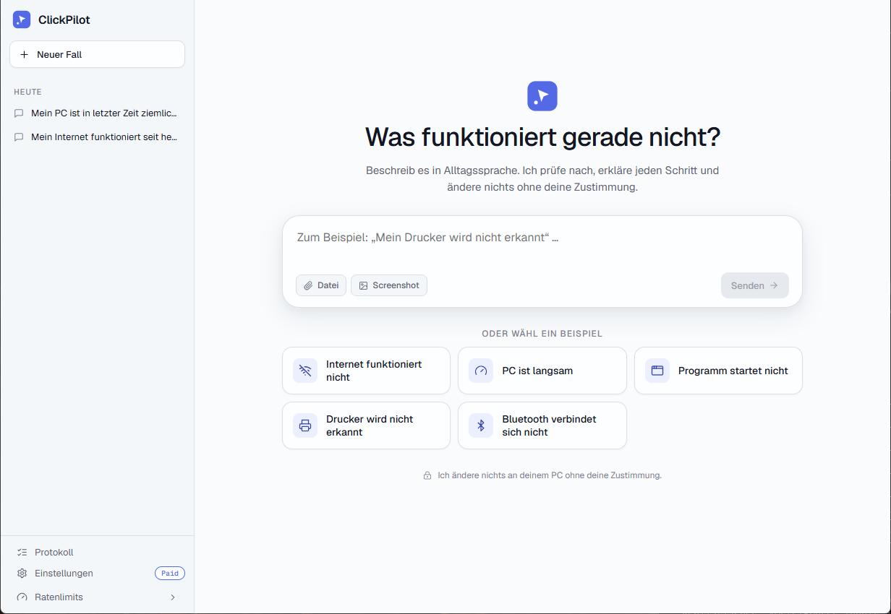
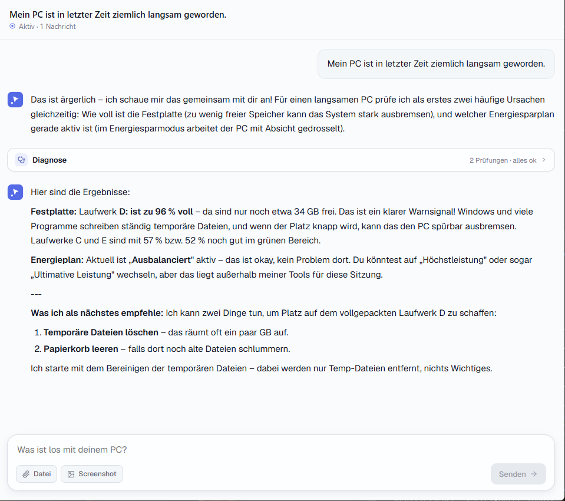
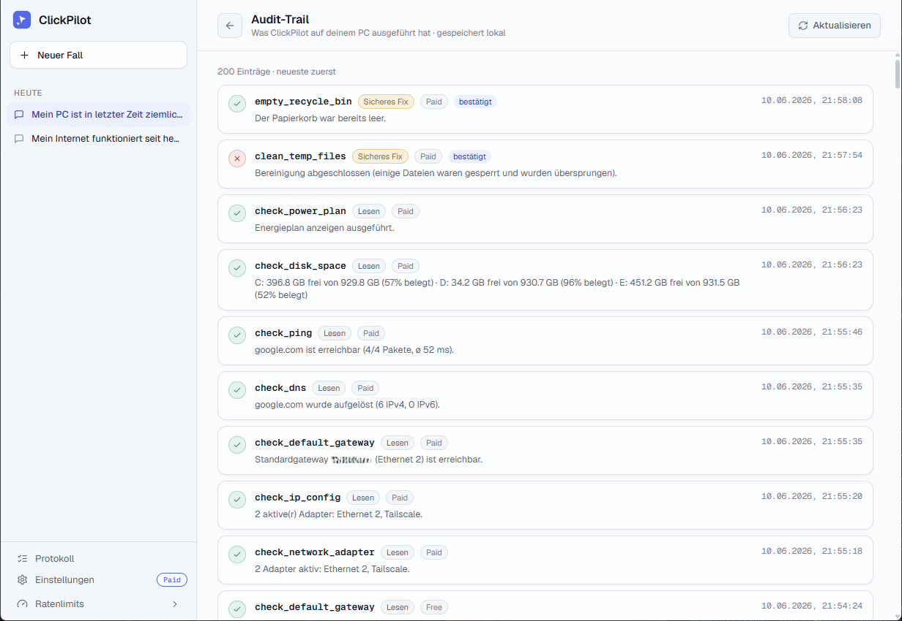
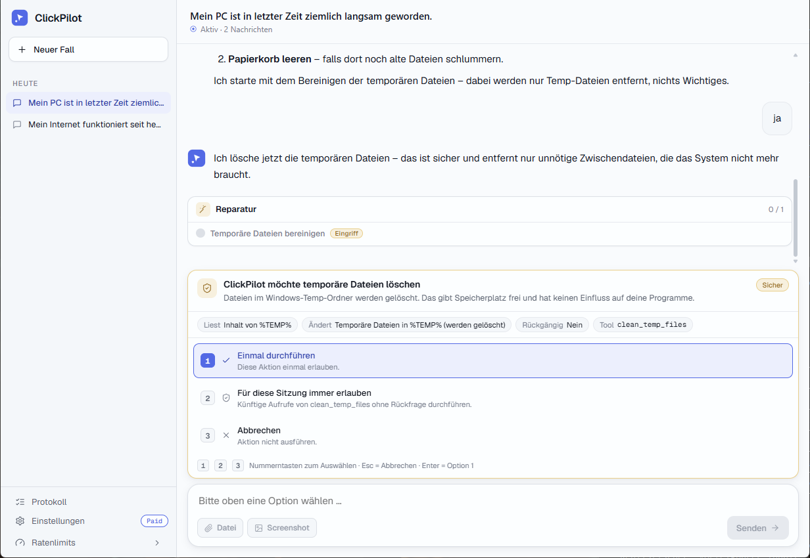
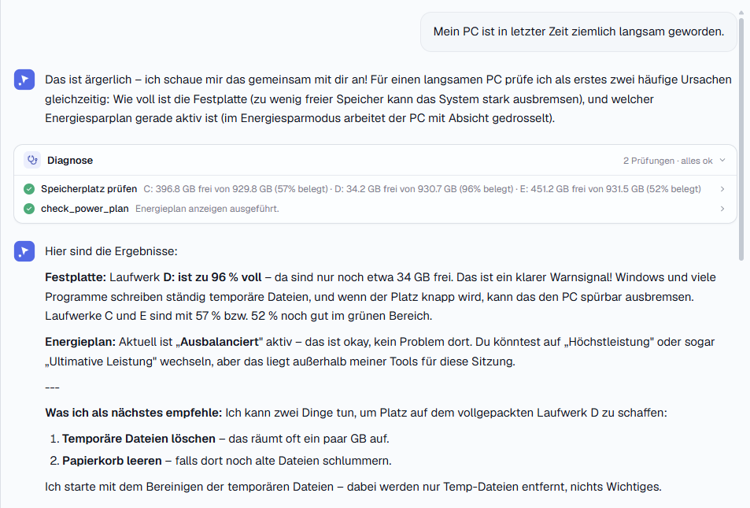

Dein PC zickt? Sag es einfach in eigenen Worten.
ClickPilot ist ein KI-Technik-Assistent: Du beschreibst dein Problem in Alltagssprache, die KI wählt die passenden Diagnose-Werkzeuge, erklärt verständlich, was los ist — und repariert auf Wunsch. Jeder Eingriff passiert nur mit deiner ausdrücklichen Bestätigung.
Windows 10 & 11 (64-Bit) · kostenloser Download

Vom Problem zur Lösung — in drei Schritten
Keine kryptischen Menüs, keine Kommandozeile. Du redest, ClickPilot handelt.
Problem beschreiben
„Mein Drucker druckt nicht" oder „Das Internet ist langsam" — ganz normal, wie du es einem Freund erklären würdest.
KI diagnostiziert
ClickPilot wählt passende Prüf-Werkzeuge, führt sie lokal auf deinem PC aus und erklärt die Ergebnisse in verständlichen Worten.
Du entscheidest
Schlägt die KI eine Reparatur vor, fragt sie zuerst. Nichts wird verändert, bevor du nicht zugestimmt hast.
Ein Werkzeugkasten, der mitdenkt
Über 20 eingebaute Diagnose- und Reparatur-Werkzeuge für die häufigsten Windows-Probleme.
Versteht Alltagssprache
Kein Fachjargon nötig. Beschreibe das Problem so, wie es sich anfühlt — die KI übersetzt es in die richtigen Prüfungen.
Sicherheit ist eingebaut
Jedes Werkzeug hat eine feste Berechtigungsstufe. Die KI kann keine beliebigen Befehle ausführen — nur geprüfte, registrierte Aktionen.
Läuft lokal auf deinem PC
Die Diagnose-Werkzeuge arbeiten direkt auf deinem Rechner. Es wird kein Fernzugriff eingerichtet und nichts ferngesteuert.
Netzwerk, Audio, Drucker & mehr
Von „kein Internet" über „kein Ton" bis „Drucker streikt": ClickPilot prüft Verbindung, Geräte, Speicherplatz und Windows-Updates.
Nachvollziehbares Protokoll
Jede ausgeführte Aktion wird lokal protokolliert. Du kannst jederzeit nachsehen, was ClickPilot getan hat.
Hält sich aktuell
ClickPilot aktualisiert sich automatisch im Hintergrund — du hast immer die neuesten Werkzeuge und Verbesserungen.
Die KI ist das Gehirn — du bist die Bremse
Jede Aktion ist einer von drei Berechtigungsstufen zugeordnet. Lesende Prüfungen laufen sofort; alles, was etwas verändert, fragt zuerst.
Lesend
Reine Prüfungen wie Verbindungstest, Speicherplatz oder Geräteliste. Verändern nichts — laufen ohne Rückfrage.
Sichere Reparatur
Unkritische Eingriffe wie DNS-Cache leeren oder einen Dienst neu starten. Erst nach deiner Bestätigung.
Tiefer Eingriff
Selten und gewichtiger, z. B. Netzwerkeinstellungen zurücksetzen. Nur mit ausdrücklicher Zustimmung — klar als solche gekennzeichnet.
Deine Daten bleiben deine. ClickPilot liest keine persönlichen Dateien und maskiert sensible Systemdaten (etwa Hardware-Adressen), bevor sie irgendwo hingehen. Für die KI-Antworten kannst du ein kostenloses Konto nutzen — Gesprächsinhalte werden dabei nicht gespeichert, nur dein Nutzungskontingent gezählt. Profis können stattdessen ihren eigenen KI-Schlüssel hinterlegen (Anfragen gehen dann direkt zum Anbieter).
So sieht ClickPilot aus
Aufgeräumt und freundlich — gebaut für Menschen, nicht für Technik-Profis.




In zwei Minuten startklar
ClickPilot installiert sich für deinen Benutzer — ohne Administratorrechte für die Installation selbst.
Herunterladen
Lade die aktuelle Version über den Button unten herunter (Datei ClickPilot_…_x64-setup.exe).
Setup starten
Doppelklick auf die heruntergeladene Datei. Folge dem deutschsprachigen Installationsassistenten.
Windows-Hinweis bestätigen
Erscheint „Der Computer wurde durch Windows geschützt", klicke auf Weitere Informationen und dann auf Trotzdem ausführen. Das ist normal — siehe Hinweis unten.
Loslegen
ClickPilot öffnet sich. Lege beim ersten Start ein kostenloses Konto an (oder hinterlege deinen eigenen KI-Schlüssel) und beschreibe dein erstes Problem.
Warum warnt Windows vor einem „unbekannten Herausgeber"? ClickPilot ist ein junges Projekt und nutzt noch kein kostenpflichtiges Signatur-Zertifikat. Solange wenige Menschen die App installiert haben, zeigt Windows SmartScreen den Hinweis vorsorglich bei jeder neuen Software an — er ist kein Zeichen für ein Problem. Du kannst die App wie oben beschrieben bedenkenlos starten. Mit zunehmender Verbreitung verschwindet der Hinweis.
Aktuellste Version · Windows 10 & 11 (64-Bit)
Gut zu wissen
Was kostet ClickPilot?
ClickPilot befindet sich in einer frühen Phase. Du kannst die App herunterladen und mit einem kostenlosen Konto sofort loslegen — ein monatliches Nutzungskontingent ist inbegriffen. Wer mehr braucht oder lieber den eigenen KI-Schlüssel nutzt, kann das jederzeit tun.
Ist das sicher? Kann die KI etwas kaputt machen?
Die KI kann ausschließlich fest registrierte Werkzeuge mit klarer Berechtigungsstufe verwenden — keine beliebigen Systembefehle. Lesende Prüfungen verändern nichts. Alles, was eingreift, braucht zuerst deine ausdrückliche Zustimmung über einen Dialog. Diese Bremse ist technisch erzwungen, nicht nur eine Bitte an die KI.
Welche Windows-Version brauche ich?
ClickPilot läuft auf Windows 10 und Windows 11 (jeweils 64-Bit). Eine Internetverbindung wird für die KI-Antworten benötigt.
Was passiert mit meinen Daten?
Die Diagnose läuft lokal auf deinem PC. Persönliche Dateien werden nicht gelesen, sensible Systemdaten (wie Hardware-Adressen) werden maskiert. Nutzt du das kostenlose Konto, laufen die KI-Anfragen über unseren Vermittlungsdienst zum KI-Anbieter — die Gesprächsinhalte werden dabei nicht gespeichert, lediglich dein Nutzungskontingent wird gezählt. Mit eigenem KI-Schlüssel gehen die Anfragen direkt zum Anbieter.
Brauche ich einen eigenen KI-Schlüssel?
Nein. Ein kostenloses Konto genügt für den Einstieg. Profis, die bereits einen Anthropic-API-Schlüssel besitzen, können diesen alternativ hinterlegen.
Wie deinstalliere ich ClickPilot wieder?
Wie jedes Windows-Programm: über „Einstellungen → Apps → Installierte Apps → ClickPilot → Deinstallieren". Es bleiben keine Systemänderungen zurück.
Bereit, dein PC-Problem loszuwerden?
Lade ClickPilot herunter und beschreibe in einem Satz, was nicht stimmt. Den Rest übernimmt die KI — Schritt für Schritt, mit dir an der Bremse.
Jetzt herunterladen